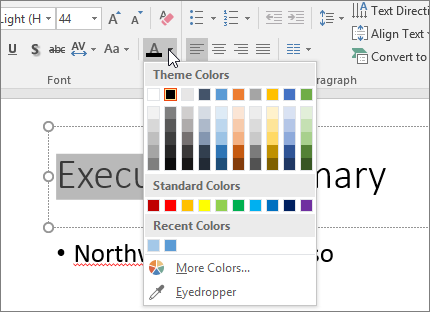

You can change the color of text for one or more slides.
Select the text that you want to change.
On the Home tab, choose Font Color, and then select the color that you want to change the color of the text to.

Tips:
If you don’t see the color that you want, choose More Colors, and then select a color on the Standard tab, or mix your own color on the Custom tab.
Choose Eyedropper to match colors on your slide. As you move your mouse over other text colors, a live preview of the color appears in a square. Select the color you want to match to apply it to the selected text. (The eyedropper tool is not available in PowerPoint 2007.)
If you’re building a presentation with many slides, it helps to customize the slide master first.That sets the text color and other design styles ahead of time, and each new slide you create comes with the text color that you want.
Changing the text color on the slide master applies the changes to text on multiple slides at one time.
On the View tab, choose Slide Master.
In the left thumbnail pane, select a layout that contains the text you want to change to a different color.
Select the text on the layout that you want to change.
On the mini toolbar that appears, choose Font Color, and then select the color you want to change the color of the text to.
Tip: If you don’t see the color that you want, choose More Colors, and then select a color on the Standard tab, or mix your own color on the Custom tab.
When you’re finished, choose Close Master View to return to your presentation.